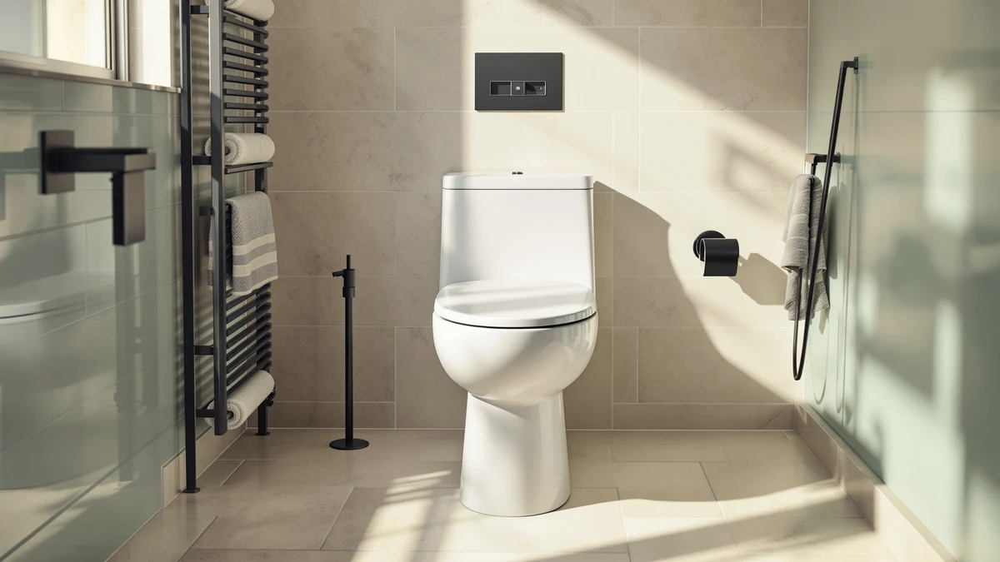

Best Toilet Seats for Paraplegics (2026)
Prices and picks verified as of August 2026. Independent, reader-supported reviews.


Quick Answer
For most people shopping for the best toilet seats for paraplegics, the Mayfair Linden Slow Close Toilet is the safest starting point. It closes gently under its own weight, so there's no need to reach back and lower it by hand, and its $39.99 price keeps it realistic if you need to outfit more than one bathroom. If your transfer needs extra height rather than only a gentler close, the KOHLER Hyten Elevated Soft Close is worth the added cost.
Our pick: Mayfair Linden Slow Close Toilet, $39.99 Check Price on Amazon
Bottom line: our top pick is the Mayfair Linden Slow Close Toilet Seat at $34.99. The best budget option is the Bemis 1500EC Lift-Off Wood Elongated Toilet Seat at $16.99.
Things to Know Before You Buy
- Slow-close hinges matter more than material. Across the best toilet seats for paraplegics we compared, a seat that lowers itself quietly removes one more step from a transfer, since you don't have to twist around to guide it down by hand.
- Seat shape has to match your existing bowl. Round bowls and elongated bowls take different seats, and an elongated seat sets you slightly further forward, which some wheelchair users find easier for a straight-on transfer.
- Added height helps more than a cushioned surface. Only one seat in this guide, the KOHLER Hyten, is built as an elevated seat. The rest are standard-height replacements that pair well with a separate riser or grab bar if you need more clearance.
- Hardware quality decides how long a seat stays stable. Metal hinges and reinforced mounting points hold up better under the side-to-side pressure of a transfer than the basic bolts used on entry-level seats.
- Review volume is a useful stability signal. Seats with tens of thousands of verified reviews, like the Bemis 1500EC at over 40,000, give you a far larger sample of long-term wear reports than a seat with a few thousand.
A good toilet seat for a paraplegic user comes down to a slow-close hinge that won't slam shut during a transfer, sturdy hardware that holds steady when you lean on it, and a shape that matches your existing bowl without forcing a plumbing project. Most standard toilet seats fail on the first point alone: a seat that has to be lowered by hand adds an extra motion at exactly the point in the routine when you can least afford one.
We compared seven seats that consistently show up in accessibility and caregiver discussions, weighing verified owner reviews, review volume, and price against the features that actually change the transfer experience. The Mayfair Linden comes out as the strongest all-around pick, the KOHLER Cachet is the one to buy if your bowl is round instead of elongated, and the KOHLER Hyten is the only seat here that adds real height rather than only a gentler close.
Below, each pick includes its price, verified rating, and honest drawbacks, along with a comparison table and a look at what we left out and why.
Why You Should Trust Us
Best Toilet Seats is written and maintained by Ilane Tall, who researches bathroom accessibility products and has covered mobility-focused fixtures for this site since it launched. We don't own a testing lab and we don't claim to have installed every seat in this guide ourselves. Instead, we build our recommendations for the best toilet seats for paraplegics by comparing manufacturer specifications, verified Amazon owner reviews, and pricing across every model we consider, then weighing those details against the features that accessibility and caregiver communities raise most often.
We do not run a fake testing lab, and we say so plainly. Every seat recommended here earns its spot through documented specs and a large body of verified reviews, not a marketing claim we can't back up.
How We Picked
We started by pulling every toilet seat in our database marketed for slow-close operation, elevated height, or reinforced hardware, since those come up most often in accessibility discussions as useful for wheelchair users and people with limited grip strength. From there we narrowed the list to seats with more than 2,000 verified reviews, since a smaller sample makes reported reliability harder to trust. We also excluded anything priced under $15, because the cheapest hardware in our database draws consistent complaints about hinges loosening within months, which is the last thing you want mid-transfer.
Within that shortlist, we prioritized seats offered in both round and elongated versions, so the best toilet seats for paraplegics on this list fit more bathroom configurations instead of locking you into one bowl shape.
How We Compared
We compared each seat's material, hinge type, bowl shape, and price against its verified rating and review count, looking for models holding a rating of 4.3 or higher across at least several thousand reviews. We also read through recent verified owner comments on each listing, focusing on mentions of hinge durability, ease of cleaning, and stability under weight, since those come up repeatedly from caregivers and wheelchair users researching the best toilet seats for paraplegics.
Where two seats scored similarly, we favored the one with the larger verified review base, on the theory that a rating built on tens of thousands of buyers is a steadier signal than a similar score from a few hundred.
Our Picks

Mayfair Linden Slow Close Toilet
What we like
- Slow-close hinges lower the seat quietly, so there's no need to reach back and guide it down by hand
- Holds a 4.4-star rating across more than 28,500 verified reviews, one of the largest samples in this guide
- Elongated shape matches the bowl size used in most homes built after 2000
Flaws but not dealbreakers
- Only available in an elongated fit, so it won't work on older round-bowl toilets
- Plastic top layer shows scratches over time if cleaned with abrasive pads
- Standard height, so it won't add the extra clearance some wheelchair transfers need
| Material | Plastic / wood |
| Size | Elongated |
The Mayfair Linden earns its spot as our top pick because it solves the complaint people raise most about standard toilet seats: hinges that need to be lowered by hand. Its slow-close mechanism uses the seat's own weight to ease it down over a few seconds, which matters if reaching back to guide a seat closed is awkward during a transfer. At $39.99, it costs about what you'd pay for a mid-range seat that skips the slow-close feature entirely.
Owners consistently note in verified reviews that the mounting hardware holds up under repeated use, which matters more than it sounds, since loose hinges are the top reason accessibility-focused seats get replaced early. The elongated shape fits most modern toilets, though you'll want to measure your bowl before ordering, since a round-bowl toilet needs a different profile entirely.

KOHLER Cachet ReadyLatch Round Toilet
What we like
- ReadyLatch hardware lets you remove the seat without tools, which simplifies deep cleaning around the hinge area
- Backed by the largest review base in this guide, over 41,000 verified ratings at 4.4 stars
- Slow-close hinge performs the same as the elongated Mayfair pick, in a round profile instead
Flaws but not dealbreakers
- Round bowls sit shorter than elongated ones, so seated posture is more compact, which larger users may find less comfortable
- A few dollars more than the Mayfair Linden for a comparable feature set
- Round shape is becoming less common in new construction, so replacement sizing can confuse first-time buyers
| Material | Plastic / wood |
| Size | Round |
If your bathroom has a round-bowl toilet, the KOHLER Cachet is the strongest option we compared. It uses KOHLER's ReadyLatch hardware, which releases the seat from its hinges without a screwdriver, useful if a caregiver needs regular access to the space underneath for cleaning.
At 41,303 verified reviews and a 4.4-star average, it also has the deepest track record of any seat on this list, giving buyers a large sample to judge long-term reliability against. Reviewers consistently note that the slow-close hinge holds up as well as pricier elongated seats, despite the round shape being a smaller, simpler part to manufacture.

Mayfair Cassel Slow Close Toilet
What we like
- Cheapest slow-close seat in this guide at $36.99, without dropping below the hardware quality we require
- 4.3-star rating across more than 17,500 verified reviews
- Elongated shape matches most modern bowls
Flaws but not dealbreakers
- Rating sits slightly below the Mayfair Linden and KOHLER Cachet, the two top picks
- Fewer verified reviews than the Bemis or KOHLER Cachet, so the long-term sample is smaller
- No round-bowl version available
| Material | Plastic / wood |
| Size | Elongated |
The Mayfair Cassel is the seat to consider if budget is the deciding factor, since it's the least expensive slow-close option we compared that still clears our 4.3-star, 2,000-review minimum. It uses the same basic slow-close hinge mechanism as the pricier Linden, without extra finish options.
Weigh the slightly lower rating against the price gap: at $36.99 versus $39.99 for the Linden, the difference per seat is small, but it adds up if you're outfitting more than one bathroom on a fixed budget.

Bath Royale Slow Close Toilet
What we like
- Highest verified rating in this guide at 4.6 stars
- Premium hardware that reviewers describe as noticeably heavier-duty than entry-level plastic seats
- Elongated shape with a finish that resists scratching better than the budget picks
Flaws but not dealbreakers
- Nearly double the price of the Mayfair Cassel for a rating gap of only a few tenths of a point
- Review base of 2,220 is the smallest in this guide, making long-term reliability harder to judge at scale
- Elongated only, no round-bowl option
| Material | Plastic / wood |
| Size | Elongated |
The Bath Royale carries the highest star rating of any seat we compared, at 4.6 across 2,220 verified reviews. That smaller review count is worth noting: it's a strong sample, though not as deep as the tens of thousands behind the Mayfair or KOHLER picks, so treat the rating as a promising signal rather than a settled track record.
At $79.98, it costs roughly twice what the budget picks in this guide run, and reviewers who paid the premium consistently point to hinge weight and finish quality as the reason. If cost isn't the limiting factor and you want the seat with the strongest current rating, this is it.

KOHLER Brevia Slow Close Elongated
What we like
- Lowest price of any seat in this guide at $31.44
- 4.4-star rating across more than 10,000 verified reviews
- Carries KOHLER's brand reputation and parts availability, useful if a replacement hinge is ever needed
Flaws but not dealbreakers
- Fewer reviews than the Cachet or Bemis, though still well above our 2,000 minimum
- Elongated only
- Reviewers note the finish is more basic than the Cachet's, without the tool-free ReadyLatch hardware
| Material | Plastic / wood |
| Size | Elongated |
The KOHLER Brevia is the value play for anyone who wants the KOHLER name without paying for the Cachet's tool-free hardware. At $31.44, it's the least expensive seat in this guide, and it still holds a 4.4-star rating across more than 10,000 verified reviews.
The tradeoff is convenience rather than durability: the Brevia uses standard hinges instead of the Cachet's quick-release latch, so removing it for deep cleaning takes a screwdriver. For most buyers focused on slow-close function at a low price, that's a reasonable tradeoff.

Bemis 1500EC Lift-Off Wood Elongated
What we like
- Lowest price in this entire guide at $16.99
- Second-largest review base at over 40,500 verified ratings, holding a 4.4-star average
- Reinforced lift-off mounting hardware resists loosening better than generic bolts
Flaws but not dealbreakers
- No slow-close hinge, so it still needs to be lowered by hand, the main drawback for paraplegic users who want hands-free operation
- Wood core covered in a painted finish, which can chip if struck repeatedly
- Elongated only
| Material | Plastic / wood |
| Size | Elongated |
The Bemis 1500EC is the outlier in this guide: it skips the slow-close hinge, but at $16.99 with over 40,000 verified reviews at 4.4 stars, it's worth including for buyers who need a reliable, well-reviewed seat on a tight budget and can manage a manual close.
For most people specifically shopping for the best toilet seats for paraplegics, the lack of slow-close is a real limitation, since guiding the seat down by hand is exactly the motion this guide tries to minimize. As a backup seat for a second bathroom, or for a caregiver who will always close it, its price and review volume are hard to beat.

KOHLER Hyten Elevated Soft Close
What we like
- The only elevated design among the seats we compared, adding height that can make a wheelchair-to-toilet transfer more level
- Ties for the highest verified rating in this guide at 4.6 stars
- Soft-close hinge combines the added height with the same hands-free closing benefit as the standard slow-close picks
Flaws but not dealbreakers
- Most expensive seat in this guide after the Bath Royale, at $57.77
- Added height means it may not fit under a low toilet tank or in a tight bathroom layout
- Review base of 8,655 is solid but smaller than the Mayfair or Bemis picks
| Material | Plastic / wood |
| Size | Elongated |
The KOHLER Hyten is the seat to choose when the barrier during a transfer is height, not just the speed of the hinge. It's the only elevated model among the seats we compared, and it holds a 4.6-star rating across 8,655 verified reviews, tied for the best in this guide.
At $57.77 it costs more than any seat here except the Bath Royale, but it solves a different problem: added clearance rather than a gentler close alone. If you're researching the best toilet seats for paraplegics with a height barrier in mind, measure your existing toilet before ordering, since combining an elevated seat with an already-tall toilet can push the final height out of comfortable range.
Quick Comparison
The table below lines up the seven best toilet seats for paraplegics we compared by material, price, and verified rating, with a "Best for" column to help you match a seat to your own transfer needs.
| Product | Material | Price | Rating | Best for | Get it |
|---|---|---|---|---|---|
| Mayfair Linden Slow Close Toilet | Plastic / wood | $39.99 | 4.4 | Best overall pick | View on Amazon → |
| KOHLER Cachet ReadyLatch Round Toilet | Plastic / wood | $40.99 | 4.4 | Best for round bowls | View on Amazon → |
| Mayfair Cassel Slow Close Toilet | Plastic / wood | $36.99 | 4.3 | Best budget slow-close pick | View on Amazon → |
| Bath Royale Slow Close Toilet | Plastic / wood | $79.98 | 4.6 | Best rated, premium price | View on Amazon → |
| KOHLER Brevia Slow Close Elongated | Plastic / wood | $31.44 | 4.4 | Best value from a known brand | View on Amazon → |
| Bemis 1500EC Lift-Off Wood Elongated | Plastic / wood | $16.99 | 4.4 | Lowest price, no slow-close | View on Amazon → |
| KOHLER Hyten Elevated Soft Close | Plastic / wood | $57.77 | 4.6 | Best for extra transfer height | View on Amazon → |
The Competition
Not every seat we researched for the best toilet seats for paraplegics made the final list. Here's what we passed on and why.
Frequently Asked Questions
The features that matter most are a slow-close hinge, so the seat doesn't need to be lowered by hand, sturdy hardware that won't shift under side-to-side pressure during a transfer, and in some cases added seat height to make the transfer from a wheelchair more level. Among the best toilet seats for paraplegics we compared, the Mayfair Linden and KOHLER Cachet cover the first two, and the KOHLER Hyten adds the third.
It depends on your existing toilet height and your transfer technique. If your current toilet already sits at a comfortable height, a standard slow-close seat like the Mayfair Linden or KOHLER Brevia may be all you need. If the transfer feels like a bigger drop than is comfortable, an elevated option like the KOHLER Hyten adds height without requiring a full toilet replacement.
Measure your existing bowl from the mounting bolts to the front edge. Round bowls typically measure about 16.5 inches, while elongated bowls run closer to 18.5 inches. Of the seats in this guide, the KOHLER Cachet is built for round bowls, while the rest, including the Mayfair Linden and KOHLER Hyten, are elongated.
Related Guides
For more on accessible bathroom seating beyond the best toilet seats for paraplegics, see these related guides.